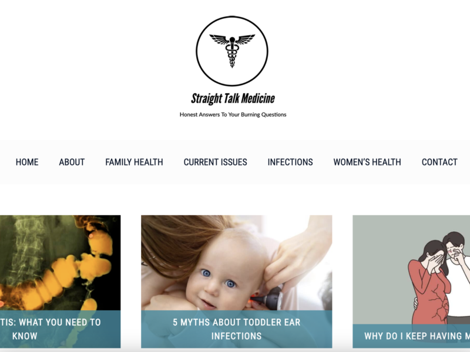
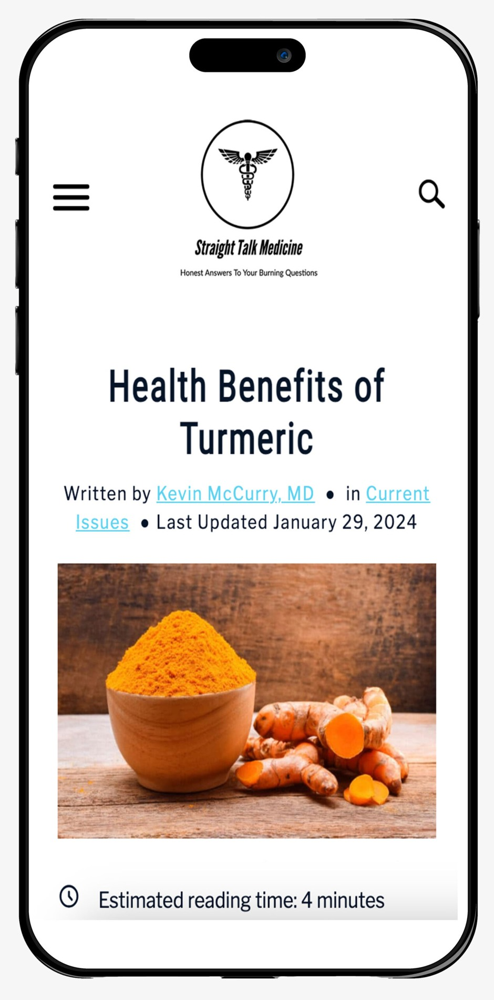

Straight Talk Medicine
A name, identity, and first website for a physician sharing practical medical writing.
Visit the live website ↗Organization
Straight Talk Medicine
Project type
Brand identity · WordPress · SEO
My role
Naming, identity, website build, and analytics setup
The challenge
A physician needed a recognizable identity and a first website where readers could discover articles by health topic.
My approach
I developed the business name, logo, and color palette, then built the WordPress site around topic navigation and featured articles. I connected a content delivery network and analytics, worked on search optimization, and adapted supplied material into short social videos.
The medical content comes from the physician. My work covered the brand, website, and digital production.



